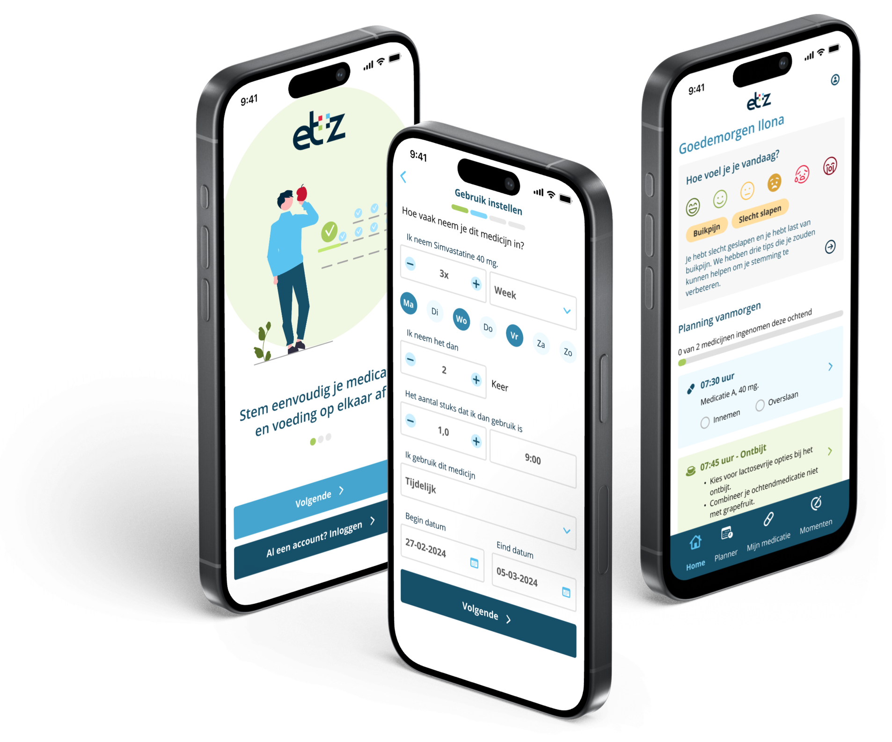

Elisabeth-TweeSteden Ziekenhuis ZorgSenior Product Designer
Een zorgapp die patiënten helpt medicatie en voeding veilig op elkaar af te stemmen
Voor de afdeling Voeding & Diëtetiek van het ETZ onderzocht en ontwierp ik een app waarmee patiënten hun medicatie en voeding in hun dagelijkse ritme bijhouden. Van interviews en veldonderzoek in het ziekenhuis tot een prototype dat met patiënten is getest.
- RolSenior Product Designer
- PeriodeCirca een half jaar
- OpdrachtgeverAfdeling Voeding & Diëtetiek
- GevalideerdGetest met patiënten in het ziekenhuis

De opdracht
Het ETZ wilde patiënten meer regie geven over hun voeding en medicatie. Bestaande middelen boden onvoldoende mogelijkheden om beide in samenhang bij te houden. De vraag was om te onderzoeken hoe een app patiënten daarbij kan ondersteunen en dat te vertalen naar een gevalideerd ontwerp.
Het probleem dat er echt zat
In gesprekken met patiënten en zorgverleners werd het onderliggende probleem duidelijk: veel patiënten weten niet dat sommige medicijnen niet samengaan met bepaalde voeding. Wie dat niet weet, kan het ook niet plannen. De app moest die combinatie bewaken in het dagelijkse ritme van de patiënt, zonder een extra administratieve last te worden.
Mijn aanpak
Uit interviews met patiënten en gebruikers werkte ik drie persona's uit. Omdat zij vrijwel allemaal hun smartphone gebruiken, koos ik de telefoon als basisplatform. Na een benchmark van voeding- en medicatie-apps, met aandacht voor notificaties, dagboekfuncties en dagelijkse begeleiding, bracht ik de user flow in kaart en ontwierp ik wireframes voor onboarding, een planner op het homescherm, mijn medicatie, voeding en een dagboek.
Het hi-fi prototype testte ik met patiënten in het ziekenhuis, onder meer tijdens sessies in de apotheek. Daarbij toetste ik de vier kernflows aan de vooraf opgestelde UX-doelen.

Het resultaat
De tests gaven een helder beeld van wat patiënten nodig hebben en waar zij vastlopen, en leverden concrete verbeterpunten op die ik verwerkte in een verbeterde versie van het prototype. De app is uiteindelijk niet ontwikkeld: de bouwkosten pasten niet binnen het budget van de afdeling. Wat er ligt, is een met patiënten gevalideerd ontwerp en een onderbouwd beeld van hoe digitale ondersteuning van voeding en medicatie eruit moet zien.
Wat dit laat zien
Ontwerpen in de zorg vraagt om onderzoek op de plek zelf: niet alleen interviews, maar ook meekijken in de apotheek. En om eerlijkheid over de uitkomst: een gevalideerd ontwerp is waardevol, ook als het nog niet gebouwd is.